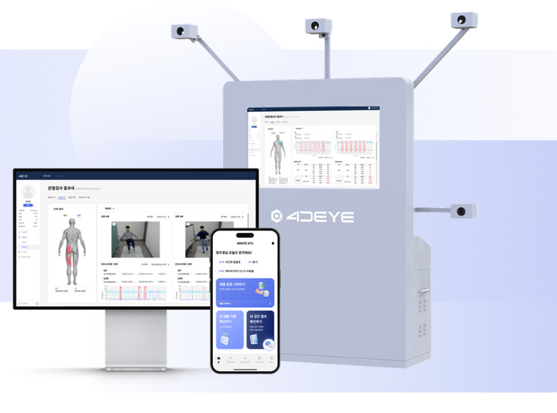

Project Archive
임상 기획부터 AI 솔루션 개발, PM까지의 실무 기록입니다.

Solution R&D
AI 근골격계 Dx & DTx 통합 솔루션
Computer Vision 기반 검진 로직 및 맞춤형 운동처방 APP의 기술 설계 및 임상 검증을 수행했습니다.

Global PM · Business
CES 2026 글로벌 기술 전시 총괄 PM
전시 전략 수립부터 기술 시나리오 설계, 현지 운영 및 바이어 리드 확보까지 프로젝트 전 과정을 총괄했습니다.
Clinical Proof
Public Business · Data
학생 불균형 체형 예방사업 실증 및 운영
경기도교육청 8,000명 대상 대규모 데이터 분석을 통해 AI 솔루션의 정량적 개선 효과를 입증했습니다.
Data Engineering
Data Engineering · ETL
근골격계 데이터 파이프라인 구축
Airflow와 Docker를 활용해 300건 이상의 헬스케어 데이터를 매일 자동으로 처리하고 시각화하는 ETL 시스템을 구축했습니다.

Media & Research Design
SBS 육체실험2 연구 디자인 및 출연
맨발걷기에 따른 뇌파 변화 연구 설계 및 실험 총괄. 방송 제작진과의 협업을 통해 과학적 실증 과정을 대중에게 전달했습니다.